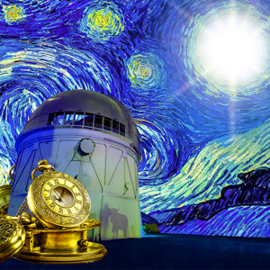

Mind Body Spirit
{kind=link}
{kind=link}

For the project Mind, Body and Spirit, I was given the task of creating three self-portraits using images found on the internet. These three portraits would reflect my intellect, my physical being and my motivations and/or emotions. To create the collage portraits, I had to combine the images using photoshop.
To start this project, I needed to look at myself and figure out who I am regarding my mind, body, and spirit. I needed to brainstorm to find what words described each of these things, so I created a mind map. To my surprise, I was able find my top five words for each category. When choosing images, I tried to find ones that "spoke" to me.
If a single image can make an impact, I wanted my collage to speak to the audience about who I am. The tricky part was to find images that would blend well together to get my point across.
In the end, I feel the images I chose and the self-portraits I created represent how I see my mind, body, and spirit. It is my hope that those who see these three collages will have a better understanding of who I am.
Process Book